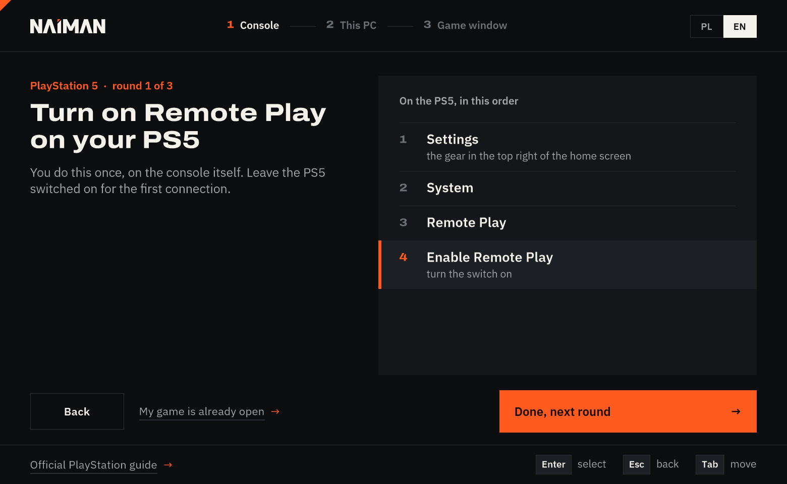
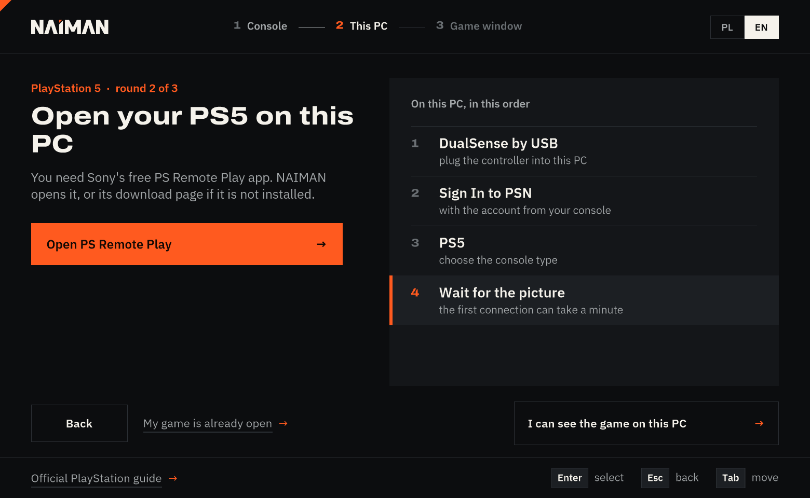
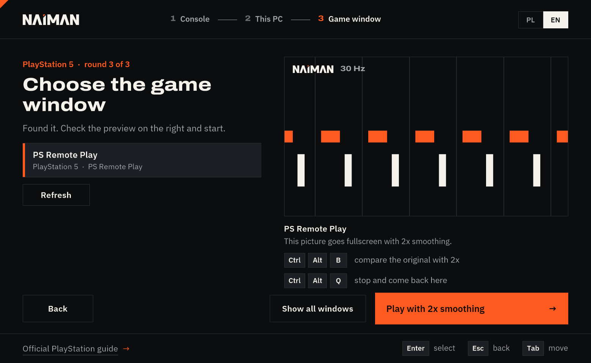

PlayStation 5
Round 1
On the PS5
Once, on the console itself. Leave the PS5 switched on for the first connection.
- Settingsthe gear in the top right of the home screen
- System
- Remote Play
- Enable Remote Playturn the switch on

Round 2
On this PC
You need Sony's free PS Remote Play app. chiaki-ng works too. In NAIMAN pick PlayStation 5 and go to round 2.
- DualSense by USBplug the controller into the PC
- Open PS Remote Playthe button in NAIMAN, or the download page
- Sign In to PSNwith the account from your console
- PS5choose the console type
- Wait for the picturethe first connection can take a minute

Round 3
In NAIMAN
The window is found for you. You check the live preview and start.
- I can see the game on this PCthe button at the bottom of round 2
- Your game windowalready selected when only one matches
- Play with 2x smoothingthe picture goes fullscreen on that monitor
